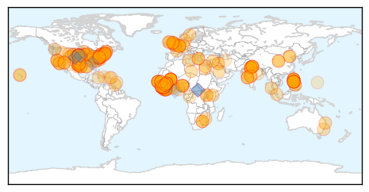
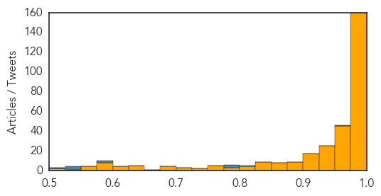
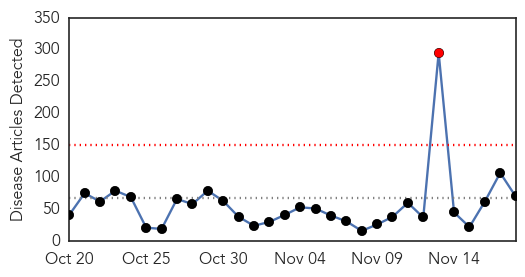
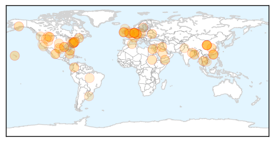

Ebola
30-Day Web Trend
0 alerts, 0 warnings

30-Day Twitter Trend
1 alerts, 0 warnings

Article Locations
Article Confidences
Top Articles:
- 1.000
- Area response prep underway for West African Ebola
- 1.000
- ‘Push Forward’ in Fight Against Ebola
- 1.000
- Ebola Researchers Race to Slow Epidemic
- 1.000
- Fearful Mali places almost 600 under Ebola surveillance
- 1.000
- India quarantines man from Liberia recovering from Ebola
- 1.000
- Ebola in India: Liberia returned Indian tests positive for Ebola in Delhi
- 1.000
- ‘Cured’ in Liberia, quarantined in India
- 1.000
- India quarantines man over Ebola sex risk
- 1.000
- Fearful Mali places at least 600 under Ebola surveillance
- 1.000
- Fearful Mali Places almost 600 under Ebola Surveillance — Naharnet
- 1.000
- Doctor With Ebola Dies at Nebraska Hospital
- 1.000
- Vaccines in Tests, Spike in Mali, Dips in Liberia
- 1.000
- Obama says Ebola still a threat, asks Congress to approve funding
- 1.000
- Fearing surge of Ebola, Mali widens virus watch
- 1.000
- Seventh SL doctor killed by Ebola - Africa
- 1.000
- Hundreds under Ebola surveillance in Mali - Africa
- 1.000
- Fearful Mali places almost 600 under Ebola surveillance
- 1.000
- Fearful Mali places almost 600 under Ebola surveillance
- 1.000
- India quarantines man over Ebola sex risk
- 1.000
- Mali: More than 500 under observation for Ebola
- 1.000
- Garin’s publicity stunt over Ebola draws flak
- 1.000
- Mali Already Has An Ebola Cluster: Can The Virus Be Stopped?
- 1.000
- ‘Cured’ of Ebola disease in Liberia, Indian man isolated in Delhi after a positive test
- 1.000
- Seventh Sierra Leone doctor killed by Ebola - source
- 1.000
- Ebola virus a 'wake-up call' for U.S. hospitals, Johns Hopkins emergency preparedness expert says
- 1.000
- Fearing Ebola surge, Mali widens virus watch
- 1.000
- UPDATE 1-Seventh Sierra Leone doctor killed by Ebola -source
- 0.999
- 7th doctor dies of Ebola in Sierra Leone
- 0.999
- Ebola Tests Can Show False Negatives
- 0.999
- Editorial: Ebola threat persists
- 0.999
- Ebola aid groups say Christie's quarantine rules hampering relief effort
- 0.999
- Ebola Virus Takes Semen Route to Sneak into India
- 0.999
- Hawaii doctor to help fight Ebola in Sierra Leone
- 0.999
- UN's Ebola pointman in Guinea dies
- 0.999
- Questions over Mali's Ebola response
- 0.999
- Réduction des risques de catastrophes
- 0.999
- Why Is Liberia Improving While Sierra Leone Continues To Battle New Cases?
- 0.999
- Man Recovering From Ebola Quarantined in Delhi: 'No Need to Panic', Says Health Minister
- 0.999
- Ebola: The Political Tool of Biological Agents
- 0.999
- Hospital tests patient for ebola
- 0.999
- Ebola reaches Delhi: Indian man who 'recovered' from killer disease enters quarantine after tests find traces of virus
- 0.999
- Efforts by UN health agency under way to step up Ebola response in Mali
- 0.999
- Sierra Leone doctor Martin Salia dies of Ebola in US
- 0.999
- Doctor Dies From Disease in Nebraska Hospital, Infected in Sierra Leone
- 0.999
- Mali Nurse Endures Neighbors’ Stoning to Battle Ebola
- 0.999
- Isle of Man pledges £100k to help Ebola crisis in West Africa
- 0.999
- Sierra Leone doctor dies of Ebola at Nebraska hospital
- 0.999
- Awareness Times News Briefs from Sierra Leone -18th November, 2014: Sierra Leone News
- 0.999
- Doctor's Death Stirs Quest for Faster, Better Ebola Tests
- 0.999
- Efforts by UN health agency under way to step up Ebola response in Mali
Showing top 50 articles...
Top Tweets:
- 0.969
- RT: Follow for the latest updates about the Ebola Virus.
- 0.942
- Stopping the Ebola epidemic in West Africa remains imperative to protecting global public health. http://t.co/yp5T8vl3xK
- 0.926
- RT: Stopping the Ebola epidemic in West Africa remains imperative to protecting global public health. http://t.co/yp5T8vl3xK…
- 0.926
- RT: Stopping the Ebola epidemic in West Africa remains imperative to protecting global public health. http://t.co/yp5T8vl3xK…
- 0.902
- Improved Ebola situation in Liberia may complicate vaccine trials http://t.co/0ZNd10xz1E TackleEbola
- 0.830
- RT: Sierra Leone MOH Ebola Update Nov 18: 53 New Conf. Cases & 11 Susp.; 10 new Conf. Deaths http://t.co/e1nKII7YAM
- 0.798
- RT: Amid signs of new Ebola cases, UN health official tells Liberians ‘you must hunt the virus’ http://t.co/f2CWBQZgkI http://t…
- 0.793
- RT: Liberia/Sierra Leone: International Football Stars Unite to Fight Ebola: [LINA]The world's top football player... http…
- 0.787
- RT: Ebola epidemic "nowhere near over" in West Africa, @CDCgov director says: http://t.co/uAwt4LFN65
- 0.778
- Food Assistance Outlook, Guinea, Liberia, and Sierra Leone ebola, April - September 2015 http://t.co/i4u9grYDo0
- 0.768
- Ebola Today Could Mean Illiteracy Tomorrow In West Africa http://t.co/b9qvF8Cyu3
- 0.761
- RT: ICYMI: Smart Ebola analysis from: Improved situation in Liberia could complicate vaccine trials. http://t.co/p…
- 0.751
- Guarding The Ebola Border http://t.co/9W6yve7wBn
- 0.745
- RT: WHO seeks swifter Ebola test to help stamp out epidemic http://t.co/lR3WsOgEWj
- 0.718
- Inauguration en Guinée d'un centre anti-Ebola financé par la France ebolaresponse ETU http://t.co/Jd3y3t0pN7 @NewsRepublic
- 0.710
- RT: Dangerous Deliveries: Ebola Devastates Women's Health In Liberia http://t.co/9wTKwRQQBg
- 0.690
- Ebola has claimed another Sierra Leonean doctor. West Africa cannot afford these losses http://t.co/Ct0C1zO81y RIP Dr. Michael Moses Kargbo
- 0.680
- RT: "Macrophages and dendritic cells infected by Ebola virus are found throughout the respiratory system" http://t.co/LnHiGXxL…
- 0.658
- RT: Liberia: Monrovia’s Ebola cases drop to 25 daily http://t.co/hnUQcfCggp
- 0.634
- RT: Seventh Sierra Leone doctor killed by Ebola: source http://t.co/wN30p7bRv2
- 0.621
- Chronique d’un film catastrophe bien préparé ebola http://t.co/2te9y2UKP5
- 0.595
- Obama says West Africa still has far to go in containing Ebola http://t.co/9gBfnmnnkd
- 0.581
- RT: BrandNew: Africa Stop Ebola -Tiken Jah Fakoly, Amadou & Mariam, Salif Keita, Oumou Sangare n many others. https://…
- 0.558
- Colin Brown: In the field in Sierra Leone against ebola- http://t.co/JIYtFrXWDJ.
- 0.553
- RT: African tourism hit by ebola fears though safari parks are further from outbreak than Europe http://t.co/TaGDSTo6pD http:…
- 0.540
- RT: LISTEN: BandAid30 damages Africa say. @HarvGoldsmith replies all ebola help good africastopebola h…
- 0.538
- RT: Cured Ebola patient from Liberia quarantined in New Delhi; virus reportedly found in his semen. http://t.co/XMmItDjLXz?
- 0.532
- RT: Ante el Ebola buscamos formas con las que suplir el contacto humano y decir: “Estamos contigo” http://t.co/AfYYleJJ7Y @eur…
- 0.514
- RT: The 6 SierraLeone doctors who have died as a result of Ebola http://t.co/CFbATdiJnY
- 0.514
- RT: The 6 SierraLeone doctors who have died as a result of Ebola http://t.co/CFbATdiJnY
- 0.506
- Ebola and emergency anthropology: The view from the “global health slot” @somatosphere http://t.co/LwUGMJyU8G
Unknown
30-Day Web Trend
1 alerts, 0 warnings

30-Day Twitter Trend
1 alerts, 0 warnings

Article Locations
Article Confidences

Top Articles:
- 0.979
- ‘New bird flu cases may infect humans’
- 0.938
- More than 170 people become sick on cruise from California
- 0.931
- The kissing bug takes a Dallas man’s life
- 0.929
- Bird flu on British duck farm is H5N8 strain
- 0.928
- Bird flu: Culling to begin at Nafferton farm
- 0.926
- Turkey supply safe despite bird flu threat
- 0.923
- Bird Flu Cases Pop Up in Europe, but Is There a Risk to Humans?
- 0.921
- Bird flu prompts cull at British duck breeding farm
- 0.917
- Chicago Tribune
- 0.917
- Chicago Tribune
- 0.917
- Chicago Tribune
- 0.917
- Chicago Tribune
- 0.917
- Chicago Tribune
- 0.917
- Chicago Tribune
- 0.917
- Chicago Tribune
- 0.917
- Chicago Tribune
- 0.917
- Chicago Tribune
- 0.917
- Chicago Tribune
- 0.917
- Chicago Tribune
- 0.917
- Chicago Tribune
- 0.917
- Chicago Tribune
- 0.917
- Chicago Tribune
- 0.910
- The world windows to Thailand
- 0.892
- Bird Flu Case Confirmed In English Farm
- 0.877
- Are you fearful of the possible implications of bird flu? « Express & Star
- 0.867
- FluMist nasal spray vaccine offered free to NN students; first Health Hero pilot program in Virginia
- 0.866
- Obama does not support Senate Keystone bill
- 0.866
- Maine's Sen. King to vote against Keystone pipeline
- 0.866
- Kiev, Ukraine rebels must establish dialogue after polls
- 0.866
- Colombia's FARC rebels confirm they have captured army general
- 0.849
- WDAM-TV 7-News, Weather, Sports-Hattiesburg, MS
- 0.837
- How bird flu threatens Europe's Christmas turkeys
- 0.837
- Britain confirms H5N8 in ducks on farm in north
- 0.836
- Britain confirms bird flu on northern England farm is H5N8 strain
- 0.813
- India: MSF supports the introduction and roll-out of single-dose treatment for kala azar
- 0.807
- Flu vaccine to be offered Nov. 21
- 0.798
- Bird Flu Kills Two In Egypt
- 0.787
- EU adopts bird flu outbreak measures
- 0.762
- Strickland: Hunters shouldn't fear common deer diseases
- 0.724
- British, Dutch Kill Poultry to Fight Bird Flu
- 0.711
- Strategy to stem infections in livestock, endangered species
- 0.701
- Viruses impaired if their targets have diverse genes
- 0.687
- Danish authorities keeping a close watch on avian flu outbreaks
- 0.684
- Dharmapuri newborn deaths: One more baby dies in Salem hospital
- 0.675
- Viruses Impaired if Their Targets Have Diverse Genes
- 0.672
- Multiple cases of flu force Algiers school to shut down
- 0.659
- PED thrives in wet, cold weather
- 0.647
- New tools in fight against virus that attacks the brain
- 0.618
- Authorities warn against hunting migrant birds to avoid bird flu
- 0.614
- Unlikely Champions Unite to Protect Antibiotics and Public Health
Showing top 50 articles...
Top Tweets:
- 0.685
- 7: Even if you got a Fluvax and still got the flu, a flu vaccine may make your illness milder. http://t.co/5PfSD0SZbO BeatTheFlu
- 0.587
- Defend against flu w/ NFL hall of famer & @Steelers defensive coordinator, Dick LeBeau.Get a flu vaccine! VaxWithMe http://t.co/MenPkx986c
- 0.551
- PAROLES DE LA CHANSON Kandia Kora (Guinée / chant en Français) L’Afrique est pleine de tristesse De voir nos... http://t.co/K3N3mjjZGh
- 0.536
- 8: Fluvax can reduce missed work and school due to flu, as well as prevent flu-related hospitalizations and deaths. BeatTheFlu
- 0.517
- RT: Outbreak of birdflu in East Yorkshire has been confirmed as H5N8 strain. Advice remains that risk to public health is very…